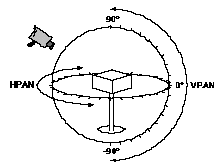

|
|
This Technote is intended to provide multimedia developers with the knowledge
necessary to create QuickTime VR 1.0 object movie files from their own
applications.
You should be familiar with the QuickTime Movie Toolbox, as documented in
Inside Macintosh: QuickTime. It will also help if you are familiar with
using the QuickTime VR Authoring Tool Suite to create object movies.
|
Note:
Although this file format will be supported in future versions of
QuickTime VR, be aware that the object movie file format will change
significantly in the next release.
|
Updated: [Feb 1 1996]
|
About the Object Movie File Format
In QuickTime VR 1.0, an object movie file contains a single object. The movie
file contains:
- an enabled video track containing the views of the object
- a
'NAVG' atom in the movie user data area describing the parameters of the
object
- a
'ctyp' atom in the movie user data specifying the QuickTime VR object movie
controller
- the poster time set to the poster view of the object
- the current time set to the poster time
- an optional movie file preview
Back to top
QuickTime VR Object Movie Authoring
To author a QuickTime VR object movie, you need to be able to capture or
generate the bitmap frames of object as viewed from all angles. The frames are
saved in the proper sequence as a video track in a QuickTime movie. User data
and file type information are then added to convert it into a QuickTime VR
object movie.
The Movie File
A QuickTime VR object movie file is a QuickTime movie file. The only difference
between an object movie file and a regular linear QuickTime movie file is how
the frames in the video track are displayed and the special user data attached
to the movie. In particular, for the Macintosh, the file type should be set to
'MooV', and on Windows the file extension should be .mov. The file's creator
type on the Macintosh should be 'vrod', which is the creator type for the
QTVRPlayer application.
As with any QuickTime file that is intended to be played on both platforms, a
data fork version of the file should be created using the FlattenMovie Movie
Toolbox call with the flattenAddMovieToDataFork flag set.
Movie Controller User Data
When you create a new QuickTime VR object movie, you must add a special piece
of user data to specify that a special QuickTime VR movie controller should be
used instead of the standard movie controller. The movie controller type for
QuickTime VR 1.0 object movies is 'stna'. This user data is examined by the
Movie Toolbox when NewMovieController is called. The following lines of code
add the appropriate user data to a new movie:
UserData uDat;
OSType controllerSubType = 'stna';
uDat = GetMovieUserData (newMovie);
SetUserDataItem (uDat, &controllerSubType, sizeof(controllerSubType),
'ctyp', 1);
|
The Object Video Track
An object movie is represented by a set of views of the object. Usually the
views are captured by moving a camera around the object in the defined pattern
of horizontal pan and vertical pan angles (see Fig. 1). Set up your camera with
the camera aimed at the object. Camera positions above the object are measured
in positive degrees; positions below the object are measured in negative
degrees. The vertical position with the camera directly above the object
looking down at it is called vertical pan 90 degrees. The vertical position with
the camera directly below the object looking up at it is called vertical pan
-90 degrees. The center vertical position (equator) is vertical pan 0 degrees,
Horizontal positions are measured in degrees from horizontal pan
0 degrees, 360 degrees.

Figure 1. Camera positions to capture views of an object
Ordering the Frames - Simple Object
For a simple object, one frame is captured at each view of the object. Apple
recommends incrementing 10 degrees between each position in both horizontal and
vertical directions. This produces relatively smooth motion as you interact
with the resulting object movie. You can experiment with a larger angle
increment if minimal file size is important. Regardless of the increment you
choose, use a consistent increment between all horizontal and vertical frames
for the object. If you are shooting the complete 360 degrees horizontally, make
sure that the increment you use divides 360 degrees evenly.
Your first shot at each horizontal position should be of the back of the
object, so that the frame showing the front of the object is half-way through
the series at that horizontal position. This improves disk-access time at
run-time, since the user will most likely be looking at the front of the
object.
Use the following procedure to shoot a full object which shows all
possible views:
- Position your camera with the vertical pan at 90 degrees (directly above the
object).
- Shoot the first frame.
- Keep the camera at the same vertical pan position and rotate it
counter-clockwise to the next position by increasing the horizontal pan angle,
then shoot the frame.
- Repeat step 3 until you return to the starting point.
If you moved the camera
10 degrees between each frame, you should have 36 frames to capture the entire
360 degrees
- Move the camera down by reducing the vertical pan angle.
- Repeat steps 2 through 4 for this vertical pan position.
- Repeat step 6 for each vertical pan position until you reach a vertical pan
position of -90 degrees (directly below the object).
Depending on the object, you may choose not to shoot views towards the top or
bottom positions. You may also choose not to shoot back views of an object, if
they are uninteresting. The start and end pan angles in the horizontal and
vertical directions are required in the file format.
Save the resulting set of frames as PICT files in the form name.001, name.002,
etc., and then convert the frames into a movie using a utility such as
ConvertToMovie. Alternatively save the frames directly into a QuickTime file
during capture. Each frame must be a key frame. Frame differencing (temporal
compression) cannot be used for simple objects. Apple recommends using the
Apple Video compressor for 16-bit or greater images and the Apple Graphics
compressor for 8-bit images. Experiment with the compression quality to reduce
the file size. Each frame must have the same duration. If you set the duration
to about 1/10 of a second, you can play the movie as a QuickTime linear movie
to verify that all frames were captured properly. The frame duration is
inconsequential after conversion to QuickTime VR format.
Ordering the Frames - Looping Object
A looping object shows a looping animation at each view of the object. Follow
the procedure above for shooting an object, except that Step 2 should be as
follows:
2. Shoot N frames of the animation loop.
|
Note:
You must shoot exactly N frames at each camera position. When
converting the resulting frames to a movie, specify a key frame every N frames.
This will reduce the file size by allowing for frame differencing in the
animation loop. At minimum, the first frame of the animation loop at each
camera position must be a key frame.
|
Interpreting the Frames of an Object Movie
The frames of an object movie are stored in sequential order in the video
track. They should be interpreted as a two-dimensional array of frames. For a
simple object, turning an object one step to the left is equivalent to
advancing the movie one frame forward in time. Turning an object one step down
is equivalent to advancing the movie approximately 36 frames (or the actual
number of horizontal positions during capture) forward in time. For a looping
object, the number of frames to advance is N times that described above, where
N is the number of frames of the animation loop. Changing views is just a
matter of shuttling the play head of a movie to give the illusion of being able
to turn an object in two dimensions.
Figure 2. Interpretation of the order of frames saved in a video track in relation to horizontal and vertical camera positions
Table 1 summarizes the information used during the capture process and the
corresponding parameters required by the NAVG atom:
Frame Position File format parameters
Number of horizontal positions # Columns
Number of vertical positions # Rows
Starting H pan position (usually 0 degrees) Start H Pan
Ending H pan position (usually 360 degrees) End H Pan
Starting V pan position (usually 90 degrees) Start V Pan
Ending V pan position (usually -90 degrees) End V Pan
The N frames of the animation loop Loop Size
|
|
Table 1. Information used during the capture process |
|
Note:
If the start and end H pans are exactly 0 and 360, frames in the
horizontal dimensions are "wrapped," i.e., stepping past the last frame of a
row will display the first frame of that row. There is no wrapping in the
vertical direction.
|
Extending the Concept of an Object Movie
An object movie is intended as the technology to display views of a
3-dimensional object from many angles. However, since the frames of the movie
can contain any kind of picture, different kinds of interactive movies can be
created as QuickTime VR object movies. In many cases, the start and end pan
parameters might not make sense for these movies. You should interpret these
parameters as mouse scaling factors. The object movie controller interprets a
dragging motion from approximately one edge of the window to the other to be
180 degrees. Play around with the start and end pan parameters until the
interaction feels right.
The `NAVG' User Data Atom
The 'NAVG' atom in the movie user data area contains the parameters of the
object movie. The first user data item list contains the following data
structure:
// File format for version 1.0.
#pragma options align=mac68k // Use Macintosh 68k alignment
typedef struct {
short versionNumber; // Always 1
short numberOfColumns; // Number of columns in movie
short numberOfRows; // Number rows in movie
short reserved1; // Zero
short loopSize; // Number of frames shot at each position
short frameDuration; // The duration of each frame
short movieType; // kStandardObject, kObjectInScene, or
// kOldNavigableMovieScene
short loopTicks; // Number of ticks before next frame of
// loop is displayed
Fixed fieldOfView; // 180.0 for kStandardObject or
// kObjectInScene, actual degrees for
// kOldNavigableMovieScene.
Fixed startHPan; // Start horizontal pan angle in
// degrees
Fixed endHPan; // End horizontal pan angle in degrees
Fixed endVPan; // End vertical pan angle in degrees
Fixed startVPan; // Start vertical pan angle in degrees
Fixed initialHPan; // Initial horizontal pan angle in
// degrees (poster view)
Fixed initialVPan; // Initial vertical pan angle in degrees
// (poster view)
long reserved2; // Zero
} QTVRObjectFileFormat1x0Record, *QTVRObjectFileFormat1x0Ptr;
|
|
Note:
In the above data structure , the sizes of the data types are:
|
Type bit size
short 16
Fixed 32
|
|
The structure uses Macintosh 68K alignment.
|
The parameters numberOfColumns, numberOfRows, startHPan, endHPan, startVPan and
endVPan are already described in Table 1. The frameDuration parameter specifies
the duration of each frame in the movie. You may obtain the value from the call
GetMovieNextInterestingTime. The movieType parameter specifies the user
interface to be used to manipulate the object and can be one of the following
values:
enum {
kStandardObject = 1, // "Object"in Add Object Data dialog
kOldNavigableMovieScene = 2, // "Scene"in Add Object Data dialog
kObjectInScene = 3 // "Object In Scene" in Add Object
// Data dialog
};
|
Specifying kStandardObject will provide the hand grabber interface for object
manipulation in the central portion of the object and the arrow interface for
spinning at the borders. Specifying kObjectInScene will provide a joystick-like
interface for spinning the object. Experiment to see which interface style is
better for your object. Specifying kOldNavigableMovieScene will provide the
original navigable movie interface for viewing a navigable movie scene. Use
this constant if you have old navigable movies of scenes that you want to use
in QuickTime VR.
The loopSize parameter is 1 for a simple object and the number of frames, N,
shot at each position for a looping movie. For a simple object, the loopTicks
parameter is ignored. For a looping movie, a LoopTicks value of 0 indicates
that the next frame at that position should be displayed as quickly as
possible. If the value is greater than 0, the frames of the loop will be cycled
at the constant rate specified (in 60ths of a second). Frames will be skipped
to maintain the frame rate. If the value is negative, the next frame in the
loop is show only after the absolute value of the specified time (in 60ths of a
second) has elapsed. This ensures that every frame will be displayed in
sequence.
The field of view parameter is 180 for standard object or an object in scene.
For an old navigable movie of a scene, it is the approximate field of view of
the image.
The parameters initialHPan and initialVPan specify the horizontal and vertical
pan angle of the object's poster view. This view is displayed when the movie is
first opened.
The Object Movie's Poster View
To ensure that the initial view (poster view), as specified in the 'NAVG' atom,
is displayed in QuickTime compatible applications, the current time and poster
time of the movie must be set to the frame specified by initialHPan and
initialVPan. As an option to make the preview of an object movie manipulable,
such as in a Standard File dialog with Show Preview checked, a movie preview
can be created. For a looping movie, make the preview duration equal to the
length of the animation loop.
SetMovieTimeValue (movie, posterViewTime);
SetMoviePosterTime (movie, posterViewTime);
SetMoviePreviewTime (movie, posterViewTime, frameDuration * loopSize);
|
Back to top
Summary
This Technote has shown how to create a QuickTime VR object movie by capturing
views of the object, organizing the frames into a video track, adding movie
user data to describe the parameters of the object, specifying the movie
controllers should be used, setting the poster frame, and changing the file
type information.
Authoring a object movie file is a fairly simple process if you make sure there
are the right number of frames in the video track, and if the duration of all
frames are the same. Make sure the resulting file is verified using
QTVRPlayer.
Back to top
References
Inside Macintosh: QuickTime
"Generating QuickTime VR Movies from QuickDraw 3D," in develop
Issue 25.
QuickTime VR 1.0 Authoring Tool Suite manuals
Back to top
Downloadables
|

|
Acrobat version of this Note (104K).
|
Download
|
Back to top
|